Chapter 5. 관계 데이터 모델¶
1절. 관계 데이터 모델 개념
2절. 관계 데이터 모델 제약
1절. 관계 데이터 모델 개념¶
관계 데이터 모델¶
- 개념적 구조를 논리적 구조로 표현하는 논리적 데이터 모델
- 하나의 개체에 대한 데이터를 하나의 릴레이션에 저장
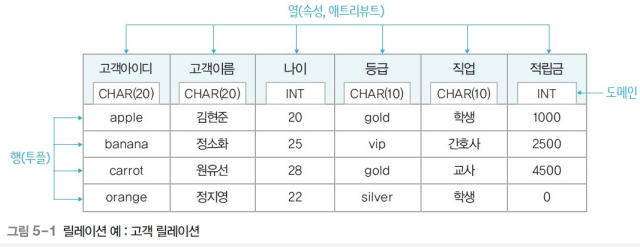
- 고객 릴레이션
- 차수(Degree) : 6
- 카디널리티(Cardinality) : 4
릴레이션(Relation)¶
- 한 개체의 데이터를 2차원 테이블 구조로 저장
- 행·열 구조의 테이블
- 파일 관리 시스템 관점에서 파일(file)에 대응
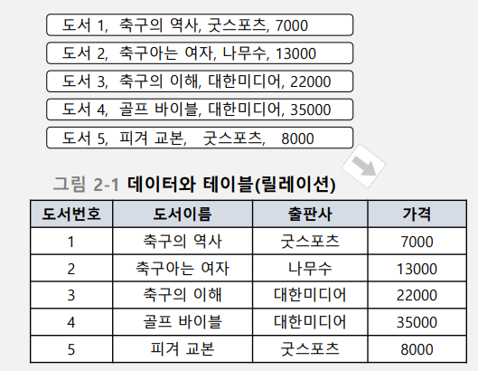 |
릴레이션 내 데이터들의 관계 |
|---|---|
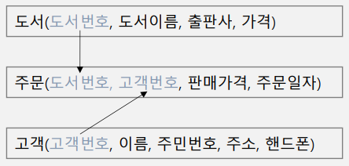 |
릴레이션 간 관계 |
|---|---|
속성(Attribute)¶
- 릴레이션의 열
- 파일 관리 시스템 관점에서 필드(field)에 대응
튜플(Tuple)¶
- 릴레이션의 행
- 파일 관리 시스템 관점에서 레코드(record)에 대응
도메인(Domain)¶
- 하나의 속성이 갖는 모든 값의 집합
- 속성값 입력·수정 시 적합성 판단의 기준
- 속성의 특성을 고려한 데이터 타입으로 정의
널(NULL)¶
- 속성값을 아직 모르거나 해당되는 값이 없는 경우
차수(Degree)¶
- 릴레이션에서 속성 개수
카디널리티(Cardinality)¶
- 릴레이션에서 튜플 개수
릴레이션 구성¶
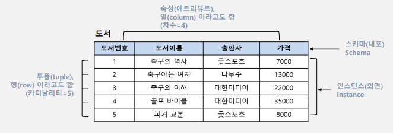
- 차수(Degree) : 4
- 카디널리티(Cardinality) : 5
| 릴레이션 구성 요소 |
설명 | 포함 요소 |
|---|---|---|
| 스키마 (Schema) |
1. 논리적 구조 2. 릴레이션 이름·릴레이션 포함 속성 이름으로 정의 3. 릴레이션 내포(Relation Intension) 4. 정적인 특징 |
속성(Attribute) 도메인(Domain) 차수(Degree) |
| 인스턴스 (Instance) |
1. 어느 한 시점에 릴레이션에 존재하는 튜플 집합 2. 릴레이션의 외연(Relation Extension) 3. 동적인 특징 |
튜플(Tuple) 카디널리티(Cardinality) |
다중 값 속성¶
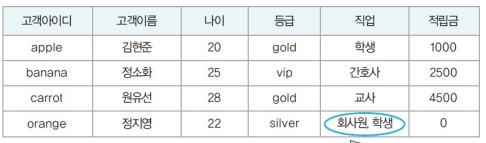
- 다중 값을 가지는 직업 속성
- 관계 데이터 모델의 릴레이션으로 부적합
- 제 1 정규형 위반
동일한 튜플 중복¶
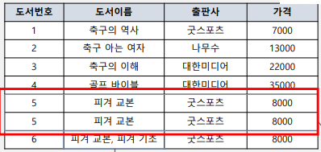
- 동일한 튜플 중복 불가
- 속성 값은 단일값 필수
릴레이션 특성¶
| 특성 | 설명 |
|---|---|
| 튜플 유일성 | 하나의 릴레이션에 동일한 튜플 존재 불가 |
| 튜플 무순서 | 하나의 릴레이션에 튜플 사이 순서 무의미 |
| 속성 무순서 | 하나의 릴레이션에 속성 사이의 순서 무의미 |
| 속성 원자성 | 속성값으로 원자값만 사용 가능 |
데이터베이스 구성¶
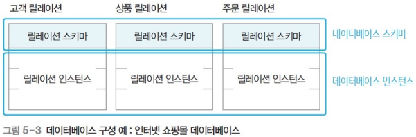
| 구성 요소 | 설명 |
|---|---|
| 데이터베이스 스키마 (DataBase Schema) |
1. 데이터베이스 전체 구조 2. 데이터베이스 구성 릴레이션 스키마 모음 |
| 데이터베이스 인스턴스 (DataBase Instance) |
데이터베이스 구성 릴레이션 인스턴스 모음 |
키(Key)¶
- 릴레이션에서 특정 튜플을 유일하게 식별하는 속성·속성 집합
- 키가 되는 속성(혹은 속성의 집합)은 반드시 값이 유일해야 함
- 튜플 구별이 가능한 값
- 릴레이션 간 관계를 맺을 때 사용
특성¶
| 특성 | 설명 |
|---|---|
| 유일성 (Uniqueness) |
하나의 릴레이션에서 모든 튜플은 서로 다른 키 값 보유 |
| 최소성 (Minimality) |
꼭 필요한 최소한의 속성들만 키 구성 |
종류¶
| 종류 | 설명 |
|---|---|
| 수퍼키 (Super Key) |
유일성을 만족하는 속성·속성의 집합 |
| 후보키 | 유일성·최소성을 만족하는 속성·속성의 집합 |
| 기본키 | 후보키 중 기본적으로 사용하기 위해 선택한 키 |
| 대체키 | 기본키로 선택되지 못한 후보키 |
| 외래키 | 다른 릴레이션의 기본키를 참조하는 속성·속성의 집합 |
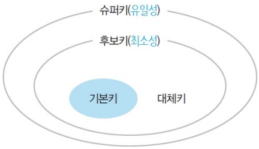
데이터베이스 릴레이션 예시¶
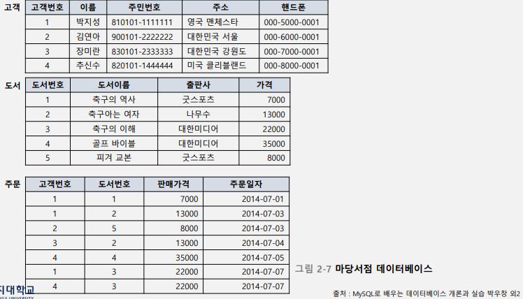
1. 수퍼키¶
-
고객 릴레이션의 슈퍼키
-
고객번호
- (고객번호, 고객이름)
-
(고객이름, 주소)
-
고객 릴레이션의 속성
| 속성 | 조건 |
|---|---|
| 고객번호 | 고객별로 유일한 값 => 튜플 식별 가능 |
| 이름 | 동명이인 존재 => 튜플 식별 불가능 |
| 주민번호 | 개인별로 유일한 값 => 튜플 식별 가능 |
| 주소 | 가족끼리 동일한 정보 사용 => 튜플 식별 불가능 |
| 핸드폰 | 한 사람이 여러 개의 핸드폰 사용, 핸드폰 미사용자 존재 => 튜플 식별 불가능 |
2. 후보키(Candidate Key)¶
-
고객 릴레이션의 후보키
-
고객번호
-
(고객이름, 주소)
-
주문 릴레이션의 속성 | 속성 | 조건 | | :------: | :------------------------------------------------------------------------ | |고객번호|한 명의 고객이 여러 권의 도서 구입 가능
=> 튜플 식별 불가능| |도서번호|도서번호가 같더라도 여러 번의 주문 기록 존재 가능
=> 튜플 식별 불가능|
3. 기본키(Primary Key)¶
-
고객 릴레이션의 기본키
-
고객아이디
| 기본키 선정 고려사항 |
|---|
| 릴레이션 내 튜플 식별 가능한 고유한 값 필요 |
| NULL 값 비허용 |
| 키 값 변동 없음 |
| 최대한 적은 수의 속성 |
| 레이션 스키마 표현 시 기본키는 밑줄 표시 |
4. 대체키(Alternate Key)¶
- 고객 릴레이션의 대체키
- (고객이름, 주소)
5. 외래키(Foreign Key)¶
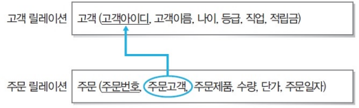
-
외래키 속성을 참조하는 기본키 속성의 이름은 상관 X
-
다만, 도메인은 무조건 일치
| 릴레이션들 간의 관계 | 설명 |
|---|---|
| 참조하는 릴레이션 | 외래키를 가진 릴레이션 |
| 참조되는 릴레이션 | 외래키가 참조하는 기본키를 가진 릴레이션 |
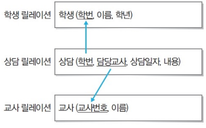 |
- 하나의 릴레이션에 여러 외래키 존재 가능 - 외래키를 기본키로 사용 가능 |
|---|---|
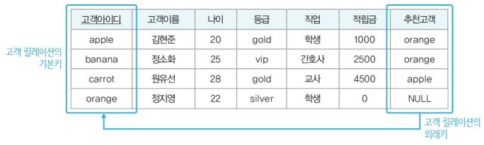 |
- 같은 릴레이션의 기본키를 참조하는 외래키 정의 가능 - 외래키는 NULL 값 보유 가능 |
|---|---|
릴레이션 간 참조 관계¶
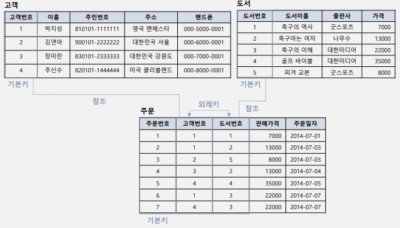
2절. 관계 데이터 모델의 제약¶
무결성 제약조건(Integrity Constraint)¶
- 데이터의 무결성을 보장 · 일관된 상태 유지를 위한 규칙
- 무결성
- 데이터 결함이 없는 상태
- 정확하고 유효하게 유지
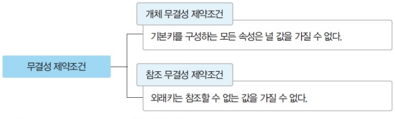
| 제약 조건 종류 | 설명 |
|---|---|
| 도메인 무결성 제약조건 (Domain Integrity Constraint) |
1. 도메인 제약(Domain Constraint) 2. 릴레이션 내 튜플들이 각 속성 도메인에 지정된 값만 가지는 조건 3. SQL 문에서 데이터 형식(type)·널(NULL / NOT NULL)·기본값(default)·체크(check) 등으로 지정 |
| 개체 무결성 제약조건 (Entity Integrity Constraint) |
1. 기본키 제약(Primary Key Constraint) 2. 릴레이션은 기본키를 지정· 기본키는 NULL 값 보유 불가 3. 릴레이션 내 하나의 값만 존재 |
| 참조 무결성 제약조건 (Referential Integrity Constraint) |
1. 외래키 제약(Foreign Key Constraint) 2. 외래키는 참조할 수 없는 값은 가질 수 없는 조건 3. 릴레이션 간 참조 관계 선언 4. 자식 릴레이션의 외래키는 부모 릴레이션의 기본키와 도메인 동일 5. 자식 릴레이션의 값 변경 시 부모 릴레이션의 제약 존재 6. 외래키 속성은 NULL값 보유 가능 |
개체 무결성 제약조건 삽입 / 수정 / 삭제¶
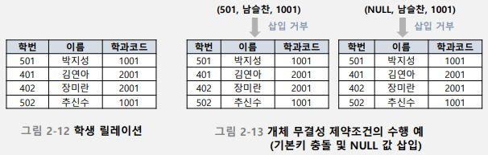
- 삽입 : 기본키 값이 같으면 삽입 금지
- 수정 : 기본키 값이 같거나 NULL로 수정 불가
- 삭제 : 특별한 확인이 불필요하며 즉시 수행
참조 무결성 제약조건 예시¶
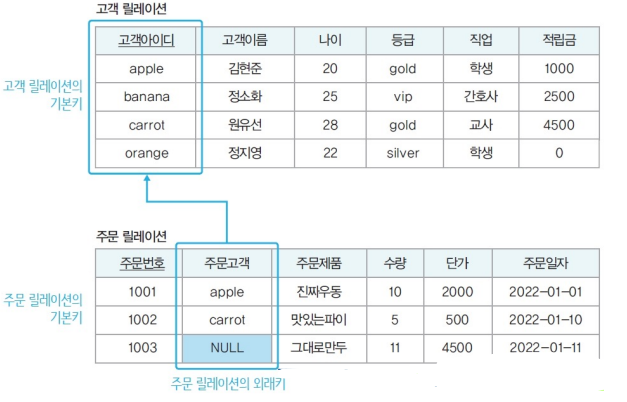
참조 무결성 제약조건 삽입 / 수정 / 삭제¶
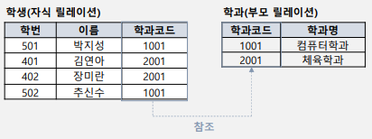
-
삽입
-
학과(부모 릴레이션) : 튜플 삽입 후 수행 시 정상적 실행
-
학생(자식 릴레이션) : 참조 받는 테이블에 외래키 값이 없다면 삽입 금지
-
삭제
-
학과(부모 릴레이션) : 참조하는 테이블을 같이 삭제할 가능성이 있어 금지·다른 추가 작업(제약조건 등) 필요
-
학생(자식 릴레이션) : 바로 삭제 가능
-
수정
- 삭제·삽입 명령 연속 수행
- 부모 릴레이션 수정 발생 시 삭제 옵션에 따라 처리
- 문제가 발생하지 않으면 삽입 제약 조건에 따라 처리
참조 무결성 제약조건의 옵션¶
- 부모 릴레이션에서의 튜플 삭제
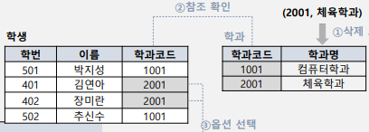
| 명령어 | 설명 | 예시 |
|---|---|---|
| RESTRICTED | 자식 릴레이션에서 참조하는 경우 부모 릴레이션의 삭제 작업 요청 거부·중지(에러 처리) | 학과 릴레이션 튜플 삭제 거부 |
| CASCADE | 자식 릴레이션의 관련 튜플을 연쇄적으로 삭제 | 학생 릴레이션의 관련 튜플 삭제 |
| DEFAULT | 자식 릴레이션의 관련 튜플을 설정 값으로 변환 | 학생 릴레이션의 학과를 다른 학과로 자동 배정 |
| NULL | 자식 릴레이션의 관련 튜플을 NULL 로 설정(NULL을 허가한 경우) | 학과 릴레이션의 학과가 NULL로 변경 |